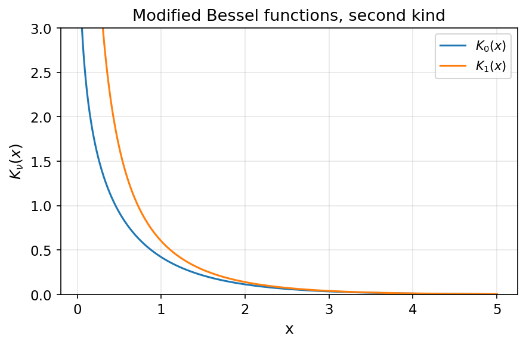
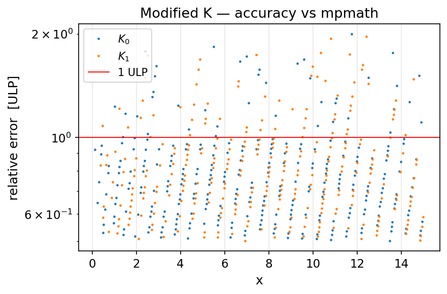

- Generated by
 1.13.2
1.13.2
|
fortran-bessels
Fast, accurate Bessel functions in pure modern Fortran
|
The functions \( K_0(x) \) and \( K_1(x) \) are the second solutions of the modified Bessel equation
\[ x^2 \frac{d^2 y}{dx^2} + x \frac{dy}{dx} - (x^2 + \nu^2)\, y = 0, \]
decaying exponentially with \( x \). They can be written as
\[ K_\nu(x) = \frac{\pi}{2}\,\frac{I_{-\nu}(x) - I_\nu(x)}{\sin(\nu\pi)}, \]
with the large- \( x \) asymptotic \( K_\nu(x) \sim \sqrt{\pi/(2x)}\, e^{-x} \).

| \( x \) | \( K_0(x) \) / \( K_1(x) \) |
|---|---|
| \( x \le 0 \) | NaN (undefined for \( x<0 \), diverges as \( x\to 0^+ \)) |
| \( x \to 0^+ \) | \( +\infty \) |
| \( +\infty \) | \( 0 \) |
besselk0/besselk1 use two branches with rational (boost-style, Holoborodko) approximations: \( x \le 1 \) uses the \( \log x \cdot I_\nu(x) \) correction form, and \( x > 1 \) a scaled \( \sqrt{x}\,e^{x} K_\nu(x) \) rational form. Against the netlib RKBESL reference they are several times faster (~6 ns/eval vs ~27–44 ns/eval) at matching accuracy:
